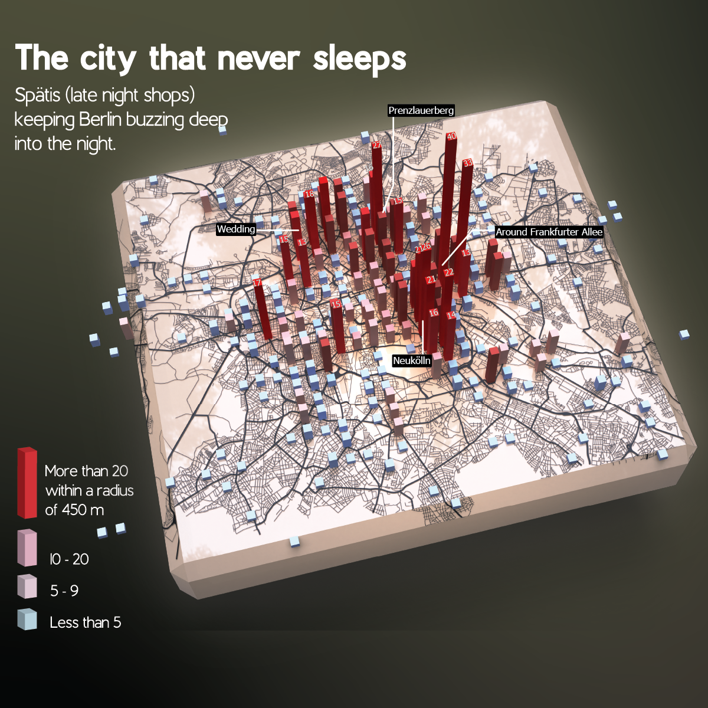
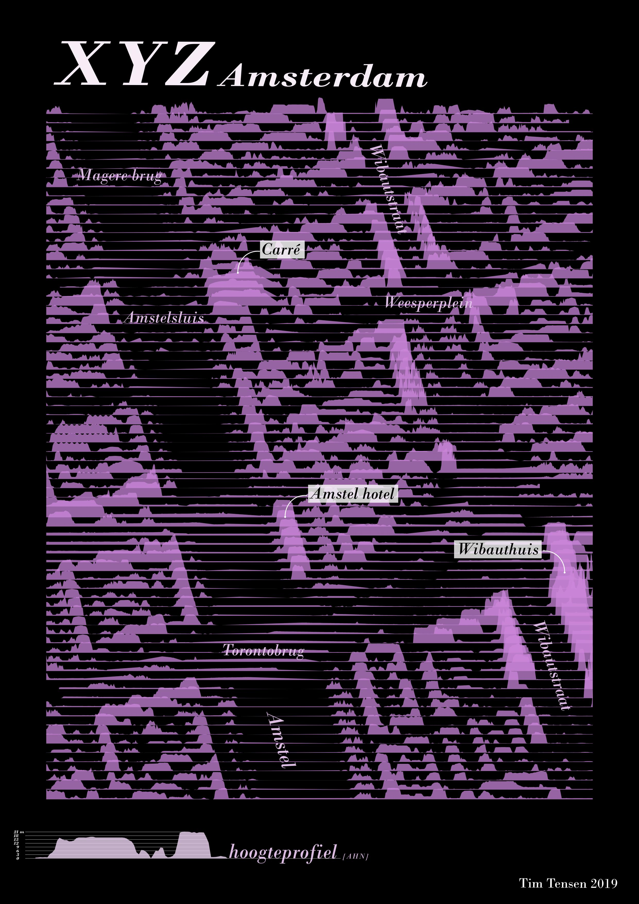
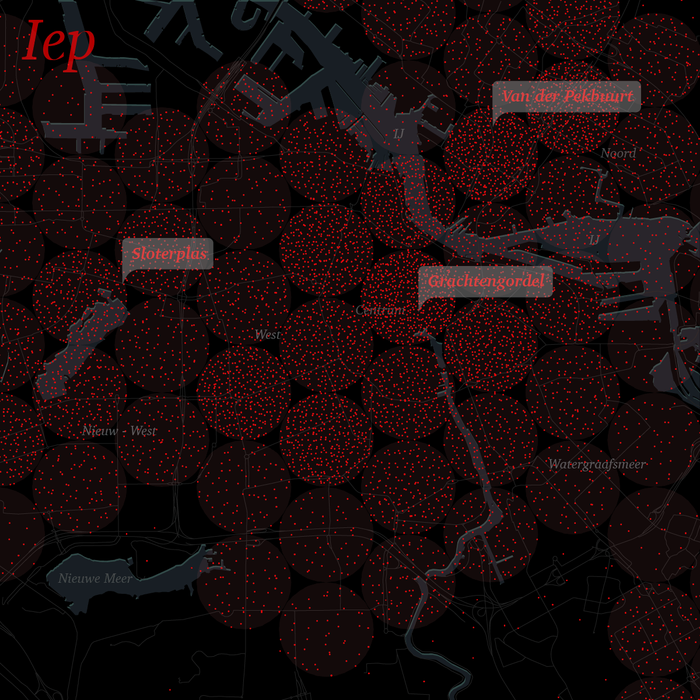

Berlin in data
Every year I take part in the 30DayMapChallenge. During my time in Berlin I made a number of visualisations showing some of the city's striking characteristics.
Berliners love table tennis — outdoors, day and night, rain or shine. I visualised where people play most using a dataset of all public table tennis tables.
Berlin is a green city and when the weather is nice Berliners head outside to one of the many city parks, their allotment or the forest or a lake.
The underground of Berlin appears when you peel back the layer of buildings and infrastructure.

At night there is always a Späti open. Using OpenStreetMap data I show how these late-night kiosks are distributed across the city.
Rotterdam shoots up
No city in the Netherlands has more high-rise than Rotterdam. In recent years many towers have been built — the city now counts 48 buildings of 70 metres or higher (the Zalmhaventoren at 215 metres is the tallest building in the Netherlands). I visualised the changing skyline for NRC based on 3D-BAG data.

Skyline of the city based on 3D-BAG data.

Combination of map and skyline, visualised over time.
How Dordrecht prepares for high water
The history of Dordrecht is marked by flooding. Part of the city centre still lies outside the dykes today. Like no other city Dordrecht thinks about what to do when things go wrong — for example by designating elevated areas as so-called shelters. I visualised this for NRC using detailed elevation data (AHN) in 3D.

Map based on elevation data showing that part of the city centre lies outside the dykes but is elevated (yellow-orange). The rest of the city lies lower (bluer). Two locations are designated by the city as possible shelters if water levels rise.
Tile patterns and narrow streets in Seville
I was inspired by the beautiful tile patterns in the city of Seville and used them as a grid to visualise street density.

Visualisation of street density.
Housing size at two levels
Where do people live large and where small in Amsterdam? I looked for a way to map this at both a detailed and more zoomed-out level in a single visualisation.

Housing size in Amsterdam visualised at 2 levels.
Amsterdam XYZ
Using detailed elevation data (AHN) I bring the centre of Amsterdam to life.

By placing the z-value on the y-axis the buildings along the Amstel in Amsterdam come to the fore.
Street trees in Amsterdam
The city of Amsterdam has a wonderful dataset of all street trees. It turns out that elm trees are most common in the centre, linden trees in Plan Zuid and Nieuw-West, oaks in the Amstelpark and ash trees in Buitenveldert.

Representation of the number of trees in a grid of circles to bring a tree-like feeling to the visualisation. Each dot represents 10 trees.